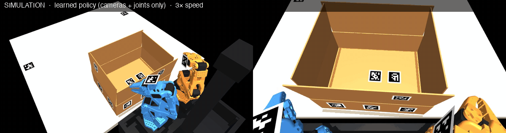

UPDATED · 09 OCT 2026
INTRO
Hoya Botto
Automation for all Kesennuma manufacturing.
One flap is the first test. A local cooperative is the ambition.
Ron Turetzky · Hackatsuon 2026
UPDATED · 09 OCT 2026
TEAM
Team A team for a local manufacturing automation program
Ron Turetzky Community builder Bread Cooperative co-founder Second Kesennuma Hackatsuon Decentral Park Bread Cooperative AI and software integration Interface design and workshops Manufacturing program lead Selected organizations in Bread’s published portfolio Ron Turetzky; portrait restored at his request Decentral Park official green logo Bread Cooperative official solid orange logo Ethereum Foundation Gnosis Deloitte European Commission Optimism Stellar EigenCloud Curve Labs Funding the Commons The Movements Trust
UPDATED · 09 OCT 2026
FIELDWORK
Hachiyo: our first manufacturing case A food-packaging visit reveals work between machines and people
Automatic filling People inspect and close cartons On 2 October, we visited Hachiyo to understand the packaging work. Its public account shows automation handing work back to people for checking and closing. First test: one flap. Then assess handling, inspection and other work across manufacturing. Hachiyo official emblem Hachiyo official company wordmark Hachiyo public filling-process photograph; not our tour photograph Hachiyo public carton-closing photograph; not our tour photograph
UPDATED · 09 OCT 2026
FACTORY PROCESS
Stack three, close the top, pass onward The first observed workflow: an illustrated Hachiyo process
UPDATED · 09 OCT 2026
KESENNUMA
The whole manufacturing sector 151 establishments across food, materials, machinery and more
151 manufacturing establishments 78 food + 73 other manufacturing 3,816 people employed Across all manufacturing categories ¥11.84bn annual personnel cost Published 2024 cost base Food processing Automatic filling and packing; people inspect and close cartons. Precision manufacturing Machining and production equipment; assess loading and inspection. Printing and finishing Printing, folding and binding machines; assess the handling between steps. Assess what remains manual around existing equipment, sector by sector. Food processing official public company logo Precision manufacturing official public company logo Printing and finishing official public company logo
UPDATED · 09 OCT 2026
DEMO
First test: one box flap A small test within a manufacturing-wide program

Simulation: a learned policy folds both short flaps using only its cameras and joint angles. It folded 63 of 63 starts it had never seen. Not yet run on the robot.
UPDATED · 09 OCT 2026
ECONOMICS
Potential annual value Published labor-cost base × work reached × useful time released
¥11.84bn annual personnel cost All manufacturing · published 12% of work cost covered 20% eligible × 60% adoption 51% useful time reduction 60% task gain × 85% useful REGIONAL SCENARIOS · ANNUAL TIME VALUE BEFORE CAPITAL AND RUNNING COSTS ¥725m ¥11.84bn × 12% × 51% Broader uptake + task coverage ¥1.79bn 30% × 80% × 70% × 90% LOCAL APPLICATION FORECASTS · ANNUAL LABOR VALUE, NOT MEASURED SAVINGS A · Office automation ¥3.67m / year ¥7.68m investment · 76% less process time C · Washing + capping ¥2.75m / year ¥4.91m investment · 75–88% less process time D · Seaweed washing ¥5.4m / year ¥11.5m investment · 3 workers redeployed yen pictogram factory pictogram time pictogram
UPDATED · 09 OCT 2026
BEYOND BOXES
Beyond boxes, across manufacturing Every published manufacturing category is in scope; task fit is assessed locally
Food 78 Food production Inspect · handle · package Beverages + feed 10 Beverages, tobacco, feed Fill · label · palletize Textiles 7 Clothing + knitwear Inspect · cut · handle Materials + print 24 Wood, paper, plastics + more Feed · finish · check quality Metals 7 Metal products + nonferrous Load · finish · inspect Machinery + electrical 15 Machines + electronics Assemble · test · tend machines Transport equipment 8 Shipbuilding + related Fabricate · handle · inspect Other manufacturing 2 Other products Choose tasks with each factory 151 establishments Different processes. Reusable task families. Feeding · handling · inspection · assembly · finishing · packaging fish pictogram feed pictogram hand pictogram factory pictogram feed pictogram robot pictogram truck pictogram inspect pictogram
UPDATED · 09 OCT 2026
CHOICE
Industrial automation needs serious capital Local project costs alongside larger system and humanoid references; all amounts in yen
¥0m ¥100m ¥200m ¥300m ¥22m+ MISUMI 028 Starting price ¥37m+ MISUMI 040 Starting price ¥50.5m 2-robot line 2017 cost model ¥63.3m Digit 5-year ownership* ¥176.9m TALOS 2017 reported price ¥200m 10-robot line 2017 cost model ¥316.5m Valkyrie 2016 asset value LOCAL APPLICATIONS · 4 ANONYMOUS SEAFOOD CASES ¥4.9m–¥22m per project Software, processing equipment, washing + capping Reported project costs; scope differs from the systems below. MISUMI 028 published photo or system pictogram MISUMI 040 published photo or system pictogram 2-robot line published photo or system pictogram Digit published photo or system pictogram TALOS published photo or system pictogram 10-robot line published photo or system pictogram Valkyrie published photo or system pictogram
UPDATED · 09 OCT 2026
SHARED DEVELOPMENT
Share automation across manufacturing Co-ops already work here. Share designs, engineering and support across different tasks.
Co-ops already work here. Shared facilities + people. Share engineering + support. 151 manufacturing sites · 6 reusable task families ONE CELL / SITE · PLANNING MODEL Separate builds ¥7.55bn Shared development ¥6.34bn Separate: 151 × ¥50m. Shared: 151 × ¥40m + 6 reusable cores × ¥50m. ONE-TIME DIFFERENCE ¥1.21bn 16% less total cost Measure value kept locally. Kesennuma Fisheries Cooperative official seal Kesennuma Joint Works Cooperative official mark Kesennuma Shishiori Processing Cooperative official wordmark 双葉印刷株式会社 official public logo; example, not an agreed member 株式会社髙橋工業 official public logo; example, not an agreed member 株式会社男山本店 official public logo; example, not an agreed member 株式会社シマ精工 official public logo; example, not an agreed member 株式会社東京ノッズル製作所 official public logo; example, not an agreed member 東京理化器械株式会社 official public logo; example, not an agreed member 株式会社登米精巧本吉工場 official public logo; example, not an agreed member 北斗株式会社 official public logo; example, not an agreed member 雪ヶ谷精密工業株式会社 official public logo; example, not an agreed member 株式会社みらい造船 official public logo; example, not an agreed member Mioテクノロジー株式会社 official public logo; example, not an agreed member 株式会社カイハツ生コン official public logo; example, not an agreed member 株式会社気仙沼ニッティング official public logo; example, not an agreed member 有限会社名縫館 official public logo; example, not an agreed member 株式会社あかふさ食品 official public logo; example, not an agreed member 株式会社ダイカ official public logo; example, not an agreed member 福寿水産株式会社 official public logo; example, not an agreed member 株式会社石渡商店 official public logo; example, not an agreed member 株式会社かわむら official public logo; example, not an agreed member 株式会社加和喜フーズ official public logo; example, not an agreed member 株式会社ミヤカン official public logo; example, not an agreed member 畠和水産株式会社 official public logo; example, not an agreed member 気仙沼ほてい株式会社 official public logo; example, not an agreed member 株式会社中華高橋水産 official public logo; example, not an agreed member 株式会社波座物産気仙沼工場 official public logo; example, not an agreed member 株式会社モリヤ official public logo; example, not an agreed member 株式会社オサベフーズ official public logo; example, not an agreed member 株式会社小野万 official public logo; example, not an agreed member 株式会社八葉水産 official public logo; example, not an agreed member 株式会社ヤヨイサンフーズ気仙沼工場 official public logo; example, not an agreed member 株式会社カネダイ official public logo; example, not an agreed member 株式会社斉吉商店 official public logo; example, not an agreed member 株式会社阿部長商店 official public logo; example, not an agreed member 株式会社マルニシ official public logo; example, not an agreed member 有限会社丸繁商店 official public logo; example, not an agreed member 株式会社マルヤマ official public logo; example, not an agreed member
UPDATED · 09 OCT 2026
CITY ALIGNMENT
Built around Kesennuma’s priorities Manufacturing productivity, local enterprise and relationships that continue
生産性向上 Higher productivity Improve work across manufacturing 新産業・新事業 Local businesses + skills Train, build and test new services 関係人口 Lasting connections Return, teach and work together MEASURES REPORTED IN THE LOCAL APPLICATION SUMMARY Work time per day Across the production line, including the process Gross profit per worker Part-time hours converted to full-time equivalents time pictogram idea pictogram link pictogram
UPDATED · 09 OCT 2026
CITY OUTCOMES
Manufacturing skills and local businesses Operators, technicians and new ventures across the sector
LOCAL PEOPLE TRAINED 20 Year 1 60 Year 2 100 Year 3 200 Year 5 Cumulative, unique learners Ambition 10 Local trainers by year 3 Graduates teach future cohorts. Operators, technicians and young makers. 20 Factories across manufacturing Food, materials, machinery and more. 40 task trials; production needs a quote. 5 Local venture pilots by year 3 Test products and paid services with customers. Potential new businesses and local inventions. Years 4–5: further cohorts, local ownership and new businesses if customer demand supports them.
UPDATED · 09 OCT 2026
WHY NOW
Global robotics is accelerating AI makes more local manufacturing capability possible. Use the global momentum.
GLOBAL INDUSTRY IS MOVING +11% Industrial robot installations worldwide in 2025 600,000+ new robots Now possible Open robot AI can run on consumer hardware. More is within small teams’ reach. Use the momentum Build and learn locally. Share progress across factories. Grow skills and new businesses. 2022 Public generative AI ChatGPT 2023 Language → robot action RT-2 2025 Affordable robot learning SmolVLA 2026 New reasoning + adaptation Gemini Robotics updates Global momentum makes local capability possible. robot pictogram train pictogram
UPDATED · 09 OCT 2026
ROADMAP
Fund a manufacturing-wide program A ¥11m pilot, then a ¥300m development and training program if it succeeds
90 DAYS ¥11m Pilot + handover One flap; measure the value Train 1 lead + 2 operators YEAR 1 ¥60m Try other processes 20 learners · 3 sites 6 trials across task families YEAR 2 ¥100m Reuse across sectors 60 learners · 10 sites 20 cumulative task trials YEAR 3 ¥140m Local services + ventures 100 learners · 20 sites 40 trials · 5 venture pilots ¥300m follow-on program ¥100m/year savings target Development, trials, training and venture support 40 production tasks × ¥2.5m net annual saving Production capex is additional. Local case forecasts do not establish net cash savings. Year 5 ambition: 200 learners and locally run services; further funding required. inspect pictogram train pictogram link pictogram idea pictogram